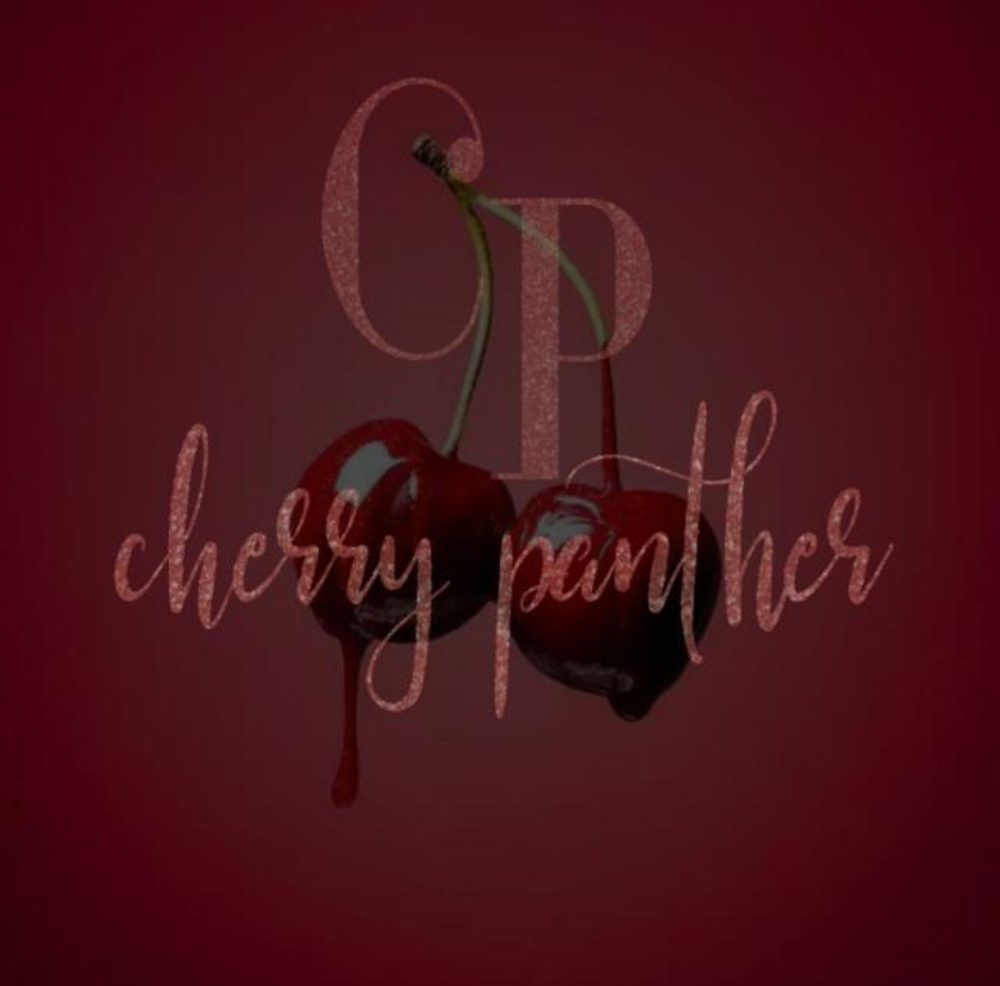

Cuarto rosa

¿Que es ideal para trabajar como modelo en nuestro estudio?
Buscamos chicas mayores de edad (+18), de cualquier nacionalidad y con los siguientes documentos segun nacionalidad. Te explicamos a continuación:
Lo necesario para que trabajemos juntos:
| Nacionalidad | Requisito |
| Colombiana | Simplemente se requiere cedula de ciudadania para verificar mayoria de edad y para la inscripción a las diferentes plataformas |
| Venezolana | Se requiere pasaporte ya que las plataformas más influyentes lo piden para verificar edad e inscripción. |
Importante:Toda la información anteriormente mostrada es importante leerla para entender la escencia y requisitos para trabajar con nosotros.
Queremos trabajar fuertemente con chicas que tengan paciencia
El modelaje web no es un negocio el cual deje grandes ganancias de la noche a la mañana. Requiere compromiso, disciplina cumpliendo un horario especifico, y sobre todo tiempo para levantar la audiencia (por lo tanto ganancias a grandes cantidades). El proceso puede llegar a tardar de 6 meses a un año en levantar. Ha de saberse que las ganancias iniciales varian entre 200 mil pesos Colombianos a un minimo (hay casos que el primer pago quincenal es mayor) y pueden ir creciendo de a pocos hasta que con trabajo y tiempo se lleguen a lograr grandes ganancias quincenales (ejemplo: 5,6, 10, 15 millones quincenales)
Es importante el orden y el aseo
Priorizamos tener cuartos limpios y desinfectados. Cada vez que termine el turno de la modelo, la misma modelo debe limpiar el cuarto (barrer y cada cierto tiempo trapear). Tambien debe desinfectar los instrumentos utilizados. Los elementos de aseo como jabon, clorox y demas los aporta el estudio. Paños desinfectantes deben ser llevados por la modelo. Tambien es necesario llevar una Toalla o cobija limpia cada día para proteger el lugar donde la modelo haga su show y aislar de suciedad los cubrelechos, sillas o cualquier lugar que se pueda ensuciar. Recuerde que de esto depende tambien su salud y estaremos atentos que este trabajo se haga.
El mejor equipo. Unete!
Nuestros espacios
Cada cuarto de nuestro estudio es amplio. La comodidad es primero, por tanto no limitamos tu creatividad con espacios pequeños sin sentido. Cada cuarto es diferente y esta amoblado con diversas cosas para su libre uso en show. Siempre estamos abiertos a recomendaciones de las modelos para alguna idea nueva, decoración, re-acomodamiento, etc. A continuación veras algunos de los espacios que tenemos para ti:
Cuarto Azul
Oficina
Cuarto Negro
Cuarto Blanco
A continuación encontraras los temas de mayor interes:
¿Porque trabajar con Nosotros? (Cherry Panthers Studio)
Para nosotros la prioridad eres tu. No nos importa generar ingresos por ti, nos interesa tu crecimiento personal y como modelo. No habrá un estudio que te ayude más que el nuestro.
¿Cuando, cuanto y como pagamos aquí? (Cherry Panthers Studio)
Debido a que la modelo es nuestra prioridad, queremos otorgarle la mayor parte posible. Con esto nos referimos a que simplemente descontaremos una parte necesaria de las ganancias para cubrir gastos basicos mientras la fama y ganancias de la modelo llegan a ser considerables para en ese momento pactar un 50/50 entre modelo y estudio. El pago es quincenal (Entre los dias 5 al 10 y luego 15 al 20 de cada mes).
¿De que trata el modelaje web?
El modelaje web trata basicamente de transmitir mediante audio y video en tiempo real con personas de todo el mundo. El estudio alquila la camara web, computador, televisor, y demas instrumentos junto con la habitación amueblada en donde la modelo va a comunicarse durante minimo 6 horas al dia en solitario sin que nadie las toque ni obligue a hacer nada que no quieran hacer. (El alquiler se paga con la minima parte de las ganancias cada quincena). Las personas para las que transmiten suelen pagar por charlar, desnudos, masturbación, bailes, o algun show planeado previamente por la modelo. En nuestra experiencia las personas con las que se comunican buscan una persona con la que puedan interactuar a diario y toman cariño o aprecio el cual es recompensado. Para ver ejemplos de lo que se debe hacer porfavor acceda al siguiente link el cual es una de las paginas donde se hace transmisión en vivo (+18) (cabe decir que no todas las modelos hacen lo mismo y es mejor observar varias transmisiones para entender bien): Haga click aqui
¿Que horarios manejamos en el estudio?
Tenemos tres horarios durante el dia. Cada uno esta dividido en transmisiones de 6 a 8 horas por horario.
- Diurno: De 7am a 3pm
- Tarde: De 3pm a 11pm
- Noche: De 11pm a 7am
¿Puedo trabajar en anonimato y bloquear paises?(sin que sepan quien soy)
Claro que si. A la modelo se le piensa siempre un nombre de usuario diferente al nombre de la persona, lo cual hara muy dificil que la encuentren en las paginas. Ademas, se pueden bloquear los paises en donde no se desee que se logre ver la transmisión.
¿Como gano dinero en el modelaje web?
Las personas que se comunican en la trasnmisión con la modelo son portadores de dinero en moneda virtual llamda "tokens". Estas personas mediante su voluntad envian propinas por diferentes motivos ya sean el simple gusto a la modelo, por acciones como desnudos, bailes, masturbación, o por el simple hecho de una buena charla.